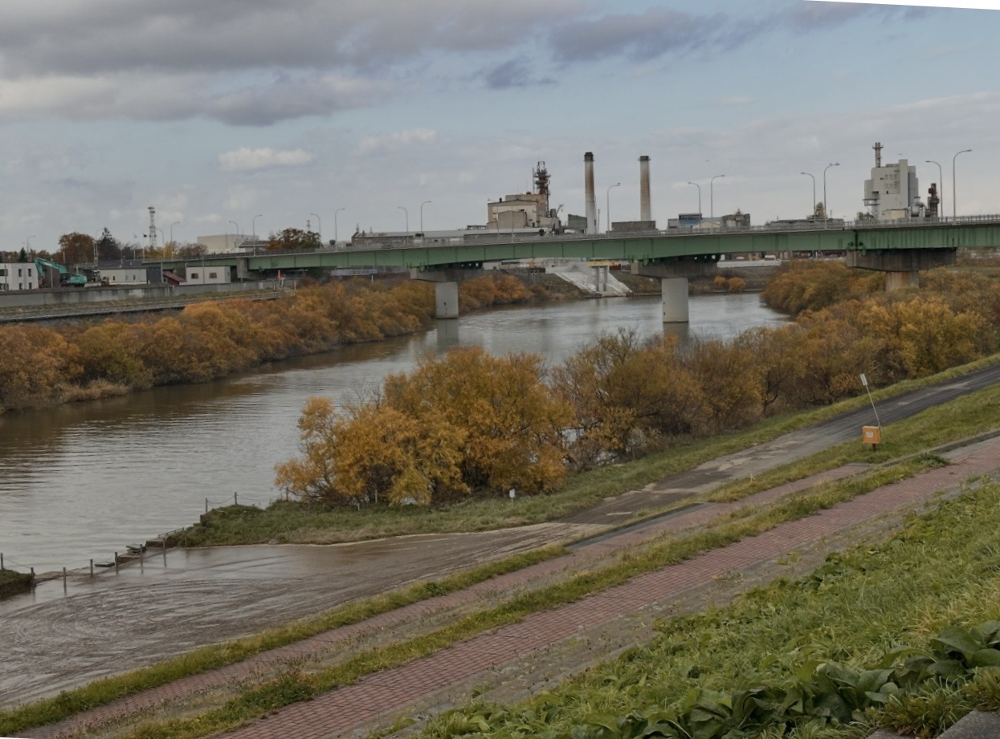
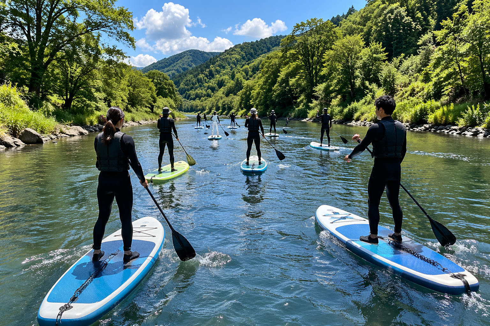
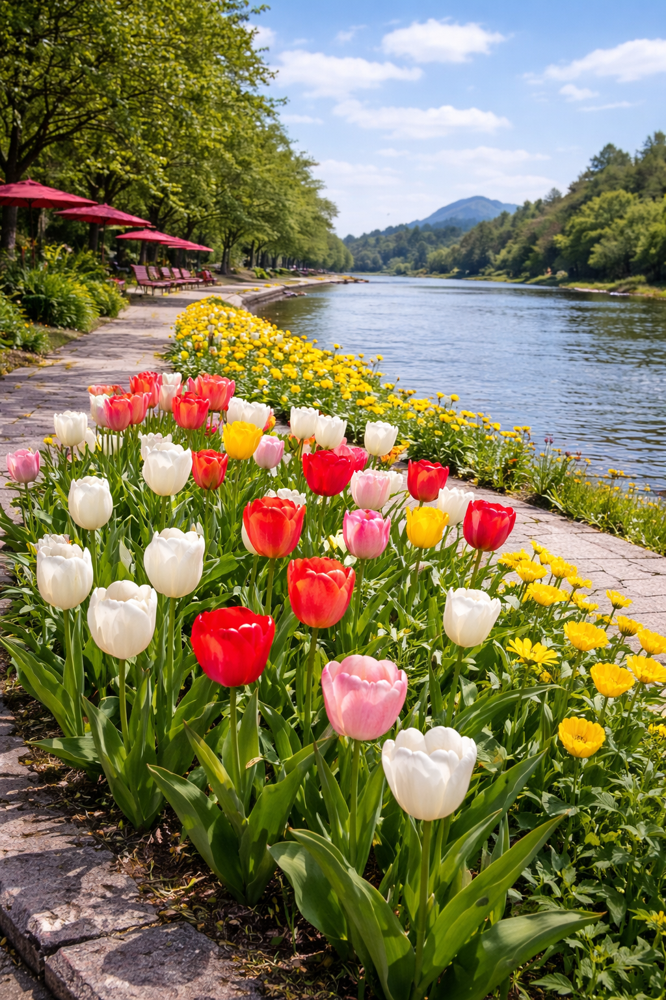
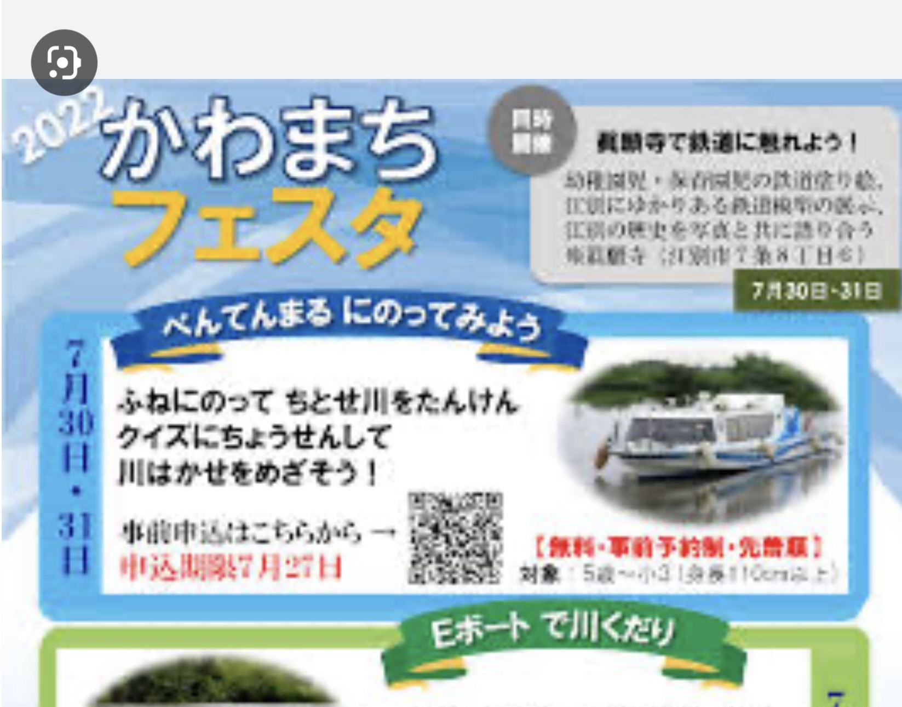

散歩道整備

地元住民が散歩やジョギングを楽しめる日常的な公園の整備を進めています。
SUP・歩くスキー

市内の川べりでSUP（スタンドアップパドルボード）や歩くスキーの快適なイベントを企画中です。
旧岡田倉庫

旧岡田倉庫を地域の新たな交流拠点として、カフェやイベントスペースとして活用する計画を進めています。
旧岡田住居

旧岡田住居を地域資源として活用するための計画を検討しています。
緑化プロモーション

地域の緑化活動を広くPRし、観光資源としての魅力向上を図ります。
地域イベント

地域住民が楽しめるイベントを企画中。飲食ブースやステージイベントなど、多彩な内容です。
地域連携事業
地域内の団体・企業と連携し、まちづくりを総合的に推進するプロジェクトです。
大学連携事業
地域の大学と連携し、学生の知見を活かした地域課題の解決に取り組みます。
移住者向け情報発信
移住を検討している方に向けて、地域の魅力や生活情報を積極的に発信しています。
お知らせ&掲示板
現在、お知らせはありません。